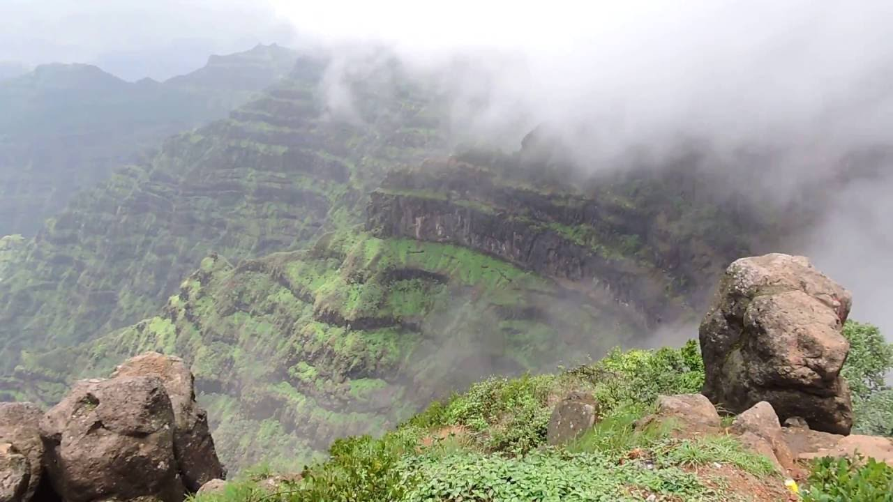

Mahabaleshwar (pronunciationⓘ) is a small town and a municipal council in Satara district, Maharashtra, India. It is a place of pilgrimage for Hindus because the Krishna River has its origin here.[1] The British colonial rulers developed the town as a hill station, and it served as the summer capital of the Bombay Presidency during the British Raj.

Mahabaleshwar is located on the mountainous Sahyadri range of the Western Ghats that run North to south along the western coast of India. The coordinates of the town are 17.9250°N 73.6575°E.[2] Mahabaleshwar is a vast plateau measuring 150 km2 (58 sq mi), bound by valleys on all sides. It reaches a height of 1,439 m (4,721 ft) at its highest peak above sea level, known as Wilson/Sunrise Point. The town is about 122 km (76 mi) southwest of Pune and 285 km (177 mi) from Mumbai. Mahabaleshwar comprises three villages: Malcolm Peth, Old "Kshetra" Mahabaleshwar, and part of the Shindola village. The Mahabaleshwar region is the source of the Krishna River that flows east across Maharashtra, Karnataka, Telangana, and Andhra Pradesh towards the Bay of Bengal. Three tributaries of Krishna, namely Koyna, Venna (Veni) and Gayatri, also have their source in Mahabaleshwar region. A fourth river, the Savitri, also has its source in the region, but flows Westward via Mahad to the Arabian Sea.

Mahabaleshwar has a borderline tropical monsoon/humid subtropical climate (Köppen Am/Cwa). Very heavy rainfall is a normal occurrence during monsoons. During July, 10–12 days of continuous rains with 100 to 200 mm or 4 to 8 in each day occur each year. There were reports of ice and ground frost formation around Venna Lake in 2018.[10][11] On August 7, 2019, Mahabaleshwar recorded 330 mm or 12.99 in of rain in 24 hours causing landslides.[12] Mahabaleshwar has been described as the "New Candidate for the wettest place in the world", the title currently held by Cherrapunji.
Legend says that a Yadava ruler from 13th century built a small temple and water tank at the source of the river Krishna.[17] The Valley of Jawali, the area around Mahabaleshwar, was ruled by the More (clan) who were vassals of the Adilshahi sultanate of Bijapur. In 1656, the founder of Maratha empire, Chhatrapati Shivaji, killed the then ruler of Valley of Javali, Chandrarao More, and seized the area.[18][19] Around that time Shivaji also built a hill fort near Mahabaleshwar called Pratapgad fort

Mahabaleshwar is a popular tourist destination in Maharashtra. Attractions include many hill side look out points with views of surrounding hills, valleys and forests such as Bombay Point, Arthur Seat, Kates Point, Lodwick-Wilson Point, and Elphinston Point. Wilson Point is the only location in Mahabaleshwar where both the sunrise and sunset can be seen. The town also has a man-made lake dating back to British era called Venna Lake. The lake is a popular place for boating. It is surrounded by a market and food stalls that are popular with the tourists.[33] Other attractions include the Lingmala waterfall. Old Mahabaleshwar is a place of pilgrimage with its Mahadeo temple. The temple is the source of the five rivers Krishna, Koyna, Venna, Savitri and Gayatri.[34] Being a relatively cool place, many temperate region crops such as strawberries, raspberries, and mulberries have been grown in Mahabaleshwar and surrounding hills. Principal amongst these crops is Strawberries. Strawberry plantations, and the produce they offer are also a popular tourist activity. The Mahabaleshwar strawberry was granted the geographical indication (GI) tag in 2010.[35][9][36] As a popular tourist destination, Mahabaleshwar has hotels and accommodation to suit different budgets.